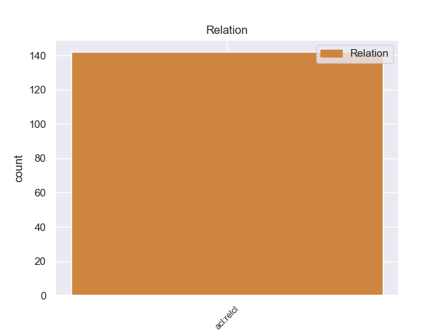
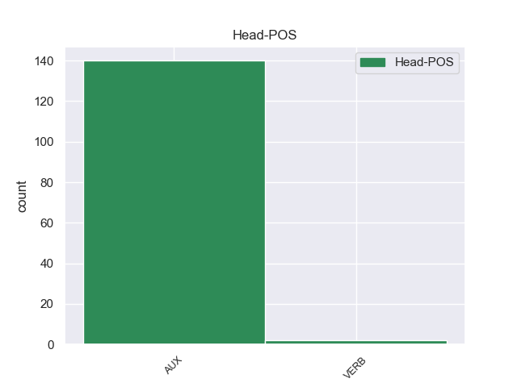
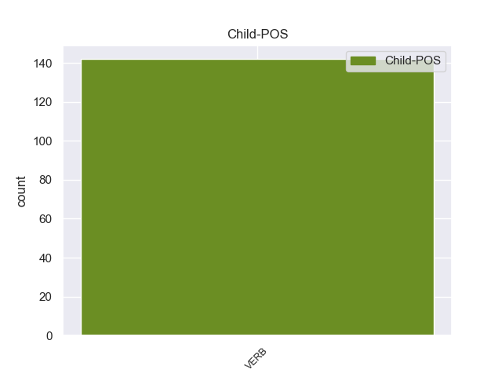

Distribution of features within this leaf



Agreement Rules sorted by frequency.
- When the dependent token is the parataxis(parataxis) of the head token, and the dependent token is VERB.
1 Durante _ _ _ _ 0 _ _ _
2 la _ _ _ _ 0 _ _ _
3 staffetta _ _ _ _ 0 _ _ _
4 , _ _ _ _ 0 _ _ _
5 i _ _ _ _ 0 _ _ _
6 nuotatori _ _ _ _ 0 _ _ _
7 fanno fare VERB -- Mood=Ind|Number=Plur|Person=3|Tense=Pres|VerbForm=Fin 0 _ _ _
8 una _ _ _ _ 0 _ _ _
9 squadra _ _ _ _ 0 _ _ _
10 di _ _ _ _ 0 _ _ _
11 4 _ _ _ _ 0 _ _ _
12 persone _ _ _ _ 0 _ _ _
13 : _ _ _ _ 0 _ _ _
14 ogni _ _ _ _ 0 _ _ _
15 nuotatore _ _ _ _ 0 _ _ _
16 nuota nuotare VERB -- Mood=Ind|Number=Sing|Person=3|Tense=Pres|VerbForm=Fin 7 parataxis _ _
17 solo _ _ _ _ 0 _ _ _
18 per _ _ _ _ 0 _ _ _
19 una _ _ _ _ 0 _ _ _
20 parte _ _ _ _ 0 _ _ _
21 di _ _ _ _ 0 _ _ _
22 il _ _ _ _ 0 _ _ _
23 percorso _ _ _ _ 0 _ _ _
24 di _ _ _ _ 0 _ _ _
25 gara _ _ _ _ 0 _ _ _
26 . _ _ _ _ 0 _ _ _
1 Il _ _ _ _ 0 _ _ _
2 primo _ _ _ _ 0 _ _ _
3 disco _ _ _ _ 0 _ _ _
4 di _ _ _ _ 0 _ _ _
5 Norah _ _ _ _ 0 _ _ _
6 Jones _ _ _ _ 0 _ _ _
7 è _ _ _ _ 0 _ _ _
8 di _ _ _ _ 0 _ _ _
9 il _ _ _ _ 0 _ _ _
10 2002 _ _ _ _ 0 _ _ _
11 e _ _ _ _ 0 _ _ _
12 si _ _ _ _ 0 _ _ _
13 chiama _ _ _ _ 0 _ _ _
14 Come _ _ _ _ 0 _ _ _
15 away _ _ _ _ 0 _ _ _
16 with _ _ _ _ 0 _ _ _
17 me _ _ _ _ 0 _ _ _
18 che _ _ _ _ 0 _ _ _
19 significa significare VERB -- Mood=Ind|Number=Sing|Person=3|Tense=Pres|VerbForm=Fin 0 _ _ _
20 “ _ _ _ _ 0 _ _ _
21 Vieni Vieni VERB -- Mood=Ind|Number=Sing|Person=2|Tense=Pres|VerbForm=Fin 19 xcomp _ _
22 via _ _ _ _ 0 _ _ _
23 con _ _ _ _ 0 _ _ _
24 me _ _ _ _ 0 _ _ _
25 ” _ _ _ _ 0 _ _ _
26 . _ _ _ _ 0 _ _ _
1 Il _ _ _ _ 0 _ _ _
2 titolo _ _ _ _ 0 _ _ _
3 di _ _ _ _ 0 _ _ _
4 il _ _ _ _ 0 _ _ _
5 nuovo _ _ _ _ 0 _ _ _
6 film _ _ _ _ 0 _ _ _
7 è essere VERB -- Mood=Ind|Number=Sing|Person=3|Tense=Pres|VerbForm=Fin 0 _ _ _
8 Caterina _ _ _ _ 0 _ _ _
9 va andare VERB -- Mood=Ind|Number=Sing|Person=3|Tense=Pres|VerbForm=Fin 7 ccomp _ _
10 in _ _ _ _ 0 _ _ _
11 città _ _ _ _ 0 _ _ _
12 . _ _ _ _ 0 _ _ _
1 Quando _ _ _ _ 0 _ _ _
2 ci _ _ _ _ 0 _ _ _
3 furono essere VERB -- Mood=Ind|Number=Plur|Person=3|Tense=Past|VerbForm=Fin 0 _ _ _
4 le _ _ _ _ 0 _ _ _
5 rivolte rivolgere VERB -- Gender=Fem|Number=Plur|Tense=Past|VerbForm=Part 3 nsubj _ _
6 di _ _ _ _ 0 _ _ _
7 Los _ _ _ _ 0 _ _ _
8 Angeles _ _ _ _ 0 _ _ _
9 ? _ _ _ _ 0 _ _ _
1 I _ _ _ _ 0 _ _ _
2 due _ _ _ _ 0 _ _ _
3 fattori _ _ _ _ 0 _ _ _
4 principali _ _ _ _ 0 _ _ _
5 che _ _ _ _ 0 _ _ _
6 hanno _ _ _ _ 0 _ _ _
7 guidato _ _ _ _ 0 _ _ _
8 questo _ _ _ _ 0 _ _ _
9 incremento _ _ _ _ 0 _ _ _
10 sono _ _ _ _ 0 _ _ _
11 stati essere AUX -- Gender=Masc|Number=Plur|Tense=Past|VerbForm=Part 0 _ _ _
12 l' _ _ _ _ 0 _ _ _
13 espansione _ _ _ _ 0 _ _ _
14 di _ _ _ _ 0 _ _ _
15 il _ _ _ _ 0 _ _ _
16 credito _ _ _ _ 0 _ _ _
17 e _ _ _ _ 0 _ _ _
18 il _ _ _ _ 0 _ _ _
19 rapido _ _ _ _ 0 _ _ _
20 aumento _ _ _ _ 0 _ _ _
21 di _ _ _ _ 0 _ _ _
22 le _ _ _ _ 0 _ _ _
23 risorse _ _ _ _ 0 _ _ _
24 dedite _ _ _ _ 0 _ _ _
25 a _ _ _ _ 0 _ _ _
26 la _ _ _ _ 0 _ _ _
27 gestione _ _ _ _ 0 _ _ _
28 di _ _ _ _ 0 _ _ _
29 gli _ _ _ _ 0 _ _ _
30 asset _ _ _ _ 0 _ _ _
31 ( _ _ _ _ 0 _ _ _
32 associata associare VERB -- Gender=Fem|Number=Sing|Tense=Past|VerbForm=Part 11 acl _ _
33 , _ _ _ _ 0 _ _ _
34 non _ _ _ _ 0 _ _ _
35 a _ _ _ _ 0 _ _ _
36 caso _ _ _ _ 0 _ _ _
37 , _ _ _ _ 0 _ _ _
38 a _ _ _ _ 0 _ _ _
39 la _ _ _ _ 0 _ _ _
40 crescita _ _ _ _ 0 _ _ _
41 esponenziale _ _ _ _ 0 _ _ _
42 di _ _ _ _ 0 _ _ _
43 le _ _ _ _ 0 _ _ _
44 entrate _ _ _ _ 0 _ _ _
45 di _ _ _ _ 0 _ _ _
46 il _ _ _ _ 0 _ _ _
47 settore _ _ _ _ 0 _ _ _
48 finanziario _ _ _ _ 0 _ _ _
49 ) _ _ _ _ 0 _ _ _
50 . _ _ _ _ 0 _ _ _
1 Alcuni _ _ _ _ 0 _ _ _
2 titoli _ _ _ _ 0 _ _ _
3 di _ _ _ _ 0 _ _ _
4 le _ _ _ _ 0 _ _ _
5 nuove _ _ _ _ 0 _ _ _
6 canzoni _ _ _ _ 0 _ _ _
7 sono essere AUX -- Mood=Ind|Number=Plur|Person=3|Tense=Pres|VerbForm=Fin 0 _ _ _
8 Vai andare VERB -- Mood=Imp|Number=Sing|Person=2|Tense=Pres|VerbForm=Fin 7 PD _ _
9 e _ _ _ _ 0 _ _ _
10 vai _ _ _ _ 0 _ _ _
11 e _ _ _ _ 0 _ _ _
12 vai _ _ _ _ 0 _ _ _
13 , _ _ _ _ 0 _ _ _
14 Portati _ _ _ _ 0 _ _ _
15 via _ _ _ _ 0 _ _ _
16 , _ _ _ _ 0 _ _ _
17 Fragile _ _ _ _ 0 _ _ _
18 , _ _ _ _ 0 _ _ _
19 Se _ _ _ _ 0 _ _ _
20 , _ _ _ _ 0 _ _ _
21 Fra _ _ _ _ 0 _ _ _
22 mille _ _ _ _ 0 _ _ _
23 anni _ _ _ _ 0 _ _ _
24 . _ _ _ _ 0 _ _ _
1 Di _ _ _ _ 0 _ _ _
2 i _ _ _ _ 0 _ _ _
3 56 _ _ _ _ 0 _ _ _
4 progetti _ _ _ _ 0 _ _ _
5 totali _ _ _ _ 0 _ _ _
6 , _ _ _ _ 0 _ _ _
7 41 _ _ _ _ 0 _ _ _
8 nascono _ _ _ _ 0 _ _ _
9 da _ _ _ _ 0 _ _ _
10 l' _ _ _ _ 0 _ _ _
11 iniziativa _ _ _ _ 0 _ _ _
12 di _ _ _ _ 0 _ _ _
13 le _ _ _ _ 0 _ _ _
14 autorità _ _ _ _ 0 _ _ _
15 competenti _ _ _ _ 0 _ _ _
16 di _ _ _ _ 0 _ _ _
17 gli _ _ _ _ 0 _ _ _
18 Stati _ _ _ _ 0 _ _ _
19 membri _ _ _ _ 0 _ _ _
20 , _ _ _ _ 0 _ _ _
21 mentre _ _ _ _ 0 _ _ _
22 i _ _ _ _ 0 _ _ _
23 restanti restare VERB -- Number=Plur|Tense=Pres|VerbForm=Part 25 nsubj:pass _ _
24 15 _ _ _ _ 0 _ _ _
25 sono essere AUX -- Mood=Ind|Number=Plur|Person=3|Tense=Pres|VerbForm=Fin 0 _ _ _
26 promossi _ _ _ _ 0 _ _ _
27 su _ _ _ _ 0 _ _ _
28 iniziativa _ _ _ _ 0 _ _ _
29 di _ _ _ _ 0 _ _ _
30 la _ _ _ _ 0 _ _ _
31 Commissione _ _ _ _ 0 _ _ _
32 / _ _ _ _ 0 _ _ _
33 di _ _ _ _ 0 _ _ _
34 l' _ _ _ _ 0 _ _ _
35 OLAF _ _ _ _ 0 _ _ _
36 . _ _ _ _ 0 _ _ _
1 Ma _ _ _ _ 0 _ _ _
2 non _ _ _ _ 0 _ _ _
3 è essere AUX -- Mood=Ind|Number=Sing|Person=3|Tense=Pres|VerbForm=Fin 0 _ _ _
4 certo _ _ _ _ 0 _ _ _
5 cosa _ _ _ _ 0 _ _ _
6 li _ _ _ _ 0 _ _ _
7 attende attendere VERB -- Mood=Ind|Number=Sing|Person=3|Tense=Pres|VerbForm=Fin 3 csubj _ _
8 a _ _ _ _ 0 _ _ _
9 la _ _ _ _ 0 _ _ _
10 fine _ _ _ _ 0 _ _ _
11 di _ _ _ _ 0 _ _ _
12 il _ _ _ _ 0 _ _ _
13 viaggio _ _ _ _ 0 _ _ _
14 : _ _ _ _ 0 _ _ _
Disagree Examples:
1 " _ _ _ _ 0 _ _ _
2 Il _ _ _ _ 0 _ _ _
3 Papa _ _ _ _ 0 _ _ _
4 ha _ _ _ _ 0 _ _ _
5 compiuto compiere VERB -- Gender=Masc|Number=Sing|Tense=Past|VerbForm=Part 0 _ _ _
6 un _ _ _ _ 0 _ _ _
7 enorme _ _ _ _ 0 _ _ _
8 passo _ _ _ _ 0 _ _ _
9 in _ _ _ _ 0 _ _ _
10 avanti _ _ _ _ 0 _ _ _
11 , _ _ _ _ 0 _ _ _
12 anche _ _ _ _ 0 _ _ _
13 rispetto _ _ _ _ 0 _ _ _
14 a _ _ _ _ 0 _ _ _
15 la _ _ _ _ 0 _ _ _
16 " _ _ _ _ 0 _ _ _
17 Mulieris _ _ _ _ 0 _ _ _
18 dignitatem _ _ _ _ 0 _ _ _
19 " _ _ _ _ 0 _ _ _
20 - _ _ _ _ 0 _ _ _
21 afferma affermare VERB -- Mood=Ind|Number=Sing|Person=3|Tense=Pres|VerbForm=Fin 5 parataxis _ _
22 - _ _ _ _ 0 _ _ _
23 . _ _ _ _ 0 _ _ _
1 " _ _ _ _ 0 _ _ _
2 Ci _ _ _ _ 0 _ _ _
3 hanno _ _ _ _ 0 _ _ _
4 chiamato chiamare VERB -- Gender=Masc|Number=Sing|Tense=Past|VerbForm=Part 0 _ _ _
5 a _ _ _ _ 0 _ _ _
6 le _ _ _ _ 0 _ _ _
7 cinque _ _ _ _ 0 _ _ _
8 - _ _ _ _ 0 _ _ _
9 quelli _ _ _ _ 0 _ _ _
10 di _ _ _ _ 0 _ _ _
11 l' _ _ _ _ 0 _ _ _
12 Associazione _ _ _ _ 0 _ _ _
13 Mondo _ _ _ _ 0 _ _ _
14 Giusto _ _ _ _ 0 _ _ _
15 , _ _ _ _ 0 _ _ _
16 ci _ _ _ _ 0 _ _ _
17 hanno _ _ _ _ 0 _ _ _
18 detto _ _ _ _ 0 _ _ _
19 che _ _ _ _ 0 _ _ _
20 zio _ _ _ _ 0 _ _ _
21 Adelio _ _ _ _ 0 _ _ _
22 era _ _ _ _ 0 _ _ _
23 stato _ _ _ _ 0 _ _ _
24 ammazzato _ _ _ _ 0 _ _ _
25 con _ _ _ _ 0 _ _ _
26 i _ _ _ _ 0 _ _ _
27 bambini _ _ _ _ 0 _ _ _
28 ... _ _ _ _ 0 _ _ _
29 " _ _ _ _ 0 _ _ _
30 , _ _ _ _ 0 _ _ _
31 sgrana sgranare VERB -- Mood=Ind|Number=Sing|Person=3|Tense=Pres|VerbForm=Fin 4 parataxis _ _
32 gli _ _ _ _ 0 _ _ _
33 occhi _ _ _ _ 0 _ _ _
34 una _ _ _ _ 0 _ _ _
35 di _ _ _ _ 0 _ _ _
36 le _ _ _ _ 0 _ _ _
37 nipoti _ _ _ _ 0 _ _ _
38 , _ _ _ _ 0 _ _ _
39 Barbara _ _ _ _ 0 _ _ _
40 , _ _ _ _ 0 _ _ _
41 20 _ _ _ _ 0 _ _ _
42 anni _ _ _ _ 0 _ _ _
43 . _ _ _ _ 0 _ _ _
1 " _ _ _ _ 0 _ _ _
2 Per _ _ _ _ 0 _ _ _
3 lui _ _ _ _ 0 _ _ _
4 il _ _ _ _ 0 _ _ _
5 lavoro _ _ _ _ 0 _ _ _
6 in _ _ _ _ 0 _ _ _
7 lo _ _ _ _ 0 _ _ _
8 Zaire _ _ _ _ 0 _ _ _
9 era essere AUX -- Mood=Ind|Number=Sing|Person=3|Tense=Imp|VerbForm=Fin 0 _ _ _
10 tutto _ _ _ _ 0 _ _ _
11 - _ _ _ _ 0 _ _ _
12 racconta raccontare VERB -- Mood=Ind|Number=Sing|Person=3|Tense=Pres|VerbForm=Fin 9 parataxis _ _
13 Barbara _ _ _ _ 0 _ _ _
14 - _ _ _ _ 0 _ _ _
15 , _ _ _ _ 0 _ _ _
16 ma _ _ _ _ 0 _ _ _
17 quando _ _ _ _ 0 _ _ _
18 erano _ _ _ _ 0 _ _ _
19 nati _ _ _ _ 0 _ _ _
20 Roberta _ _ _ _ 0 _ _ _
21 e _ _ _ _ 0 _ _ _
22 Samuele _ _ _ _ 0 _ _ _
23 aveva _ _ _ _ 0 _ _ _
24 capito _ _ _ _ 0 _ _ _
25 che _ _ _ _ 0 _ _ _
26 non _ _ _ _ 0 _ _ _
27 avrebbe _ _ _ _ 0 _ _ _
28 potuto _ _ _ _ 0 _ _ _
29 restare _ _ _ _ 0 _ _ _
30 lì _ _ _ _ 0 _ _ _
31 per _ _ _ _ 0 _ _ _
32 sempre _ _ _ _ 0 _ _ _
33 . _ _ _ _ 0 _ _ _
1 I _ _ _ _ 0 _ _ _
2 bambini _ _ _ _ 0 _ _ _
3 avevano _ _ _ _ 0 _ _ _
4 fatto _ _ _ _ 0 _ _ _
5 le _ _ _ _ 0 _ _ _
6 scuole _ _ _ _ 0 _ _ _
7 elementari _ _ _ _ 0 _ _ _
8 , _ _ _ _ 0 _ _ _
9 per _ _ _ _ 0 _ _ _
10 le _ _ _ _ 0 _ _ _
11 medie _ _ _ _ 0 _ _ _
12 zio _ _ _ _ 0 _ _ _
13 Adelio _ _ _ _ 0 _ _ _
14 avrebbe _ _ _ _ 0 _ _ _
15 preferito preferire VERB -- Gender=Masc|Number=Sing|Tense=Past|VerbForm=Part 0 _ _ _
16 studiassero studiare VERB -- Mood=Sub|Number=Plur|Person=3|Tense=Imp|VerbForm=Fin 15 ccomp _ _
17 in _ _ _ _ 0 _ _ _
18 Italia _ _ _ _ 0 _ _ _
19 . _ _ _ _ 0 _ _ _
1 Era essere AUX -- Mood=Ind|Number=Sing|Person=3|Tense=Imp|VerbForm=Fin 0 _ _ _
2 pronta _ _ _ _ 0 _ _ _
3 anche _ _ _ _ 0 _ _ _
4 lei _ _ _ _ 0 _ _ _
5 , _ _ _ _ 0 _ _ _
6 raccontano raccontare VERB -- Mood=Ind|Number=Plur|Person=3|Tense=Pres|VerbForm=Fin 1 parataxis _ _
7 in _ _ _ _ 0 _ _ _
8 paese _ _ _ _ 0 _ _ _
9 , _ _ _ _ 0 _ _ _
10 per _ _ _ _ 0 _ _ _
11 il _ _ _ _ 0 _ _ _
12 grande _ _ _ _ 0 _ _ _
13 ritorno _ _ _ _ 0 _ _ _
14 di _ _ _ _ 0 _ _ _
15 tutta _ _ _ _ 0 _ _ _
16 la _ _ _ _ 0 _ _ _
17 famiglia _ _ _ _ 0 _ _ _
18 : _ _ _ _ 0 _ _ _